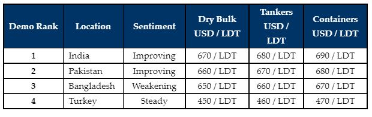

inWeekly Demolition Reports11/04/2022

It has been another impressive week in both the Indian and Pakistani markets, with reportedly several sales taking place above the USD 700/LDT mark. These levels seem increasingly indicative of a market that is firm and these repeat record levels should hold for the time-being (especially after the recent volatility). Capacity also remains ripe across the sub-continent markets and demand is certainly firm in both India and Pakistan, as levels push on off the back of steel plate prices that remain positioned impressively high (even after this week).
The Bangladeshi market is the only sub-continent destination that remains mute, despite steel prices there having flatlined (at impressive high’s) through much of this week. Yet, Chattogram Recyclers are refusing to buy at these high levels, even though evidence suggest these numbers are here to stay for at least the next month (or so)!
Much of the high-priced inventory concluded during the first quarter has ended up going to Bangladeshi shores, including a healthy collection of the large LDT VLCCs, VLOCs, Capes and Aframax tankers. As such, many Bangladeshi Buyers have already filled their plots with tonnage and are likely enjoying something of a Ramadan breather (especially with domestic activity having tempered of late).
Meanwhile, Pakistan has been beset by some major political upheaval of late, with Prime Minister Imran Khan being ousted from office (after a vote of no confidence) and his replacement is yet to be fully decided. Moreover, even the Pakistani Rupee has faced some volatility this week, raising eyebrows and caution. It is therefore unsurprising that the focus of Gadani recyclers has been elsewhere, despite two high-priced headline sales this week (that are seemingly set for a Pakistan redelivery).
In the absence of a hot Bangladeshi market, India has been securing much of the market tonnage over the last few weeks – not only HKC and specialist tonnage, but also some larger LDT tanker and offshore vessels finding their way to Alang.
Finally, the Turkish market, whilst still stable at historical highs, remains drudged with not much to report in terms of sale and purchase activity.
For week 14 of 2022, GMS demo rankings / pricing for the week are as below.

📄 Download PDF: 2022-04-11wOd_org.pdfSource: GMS,Inc. ,https://www.gmsinc.net/gms_new/index.php/web